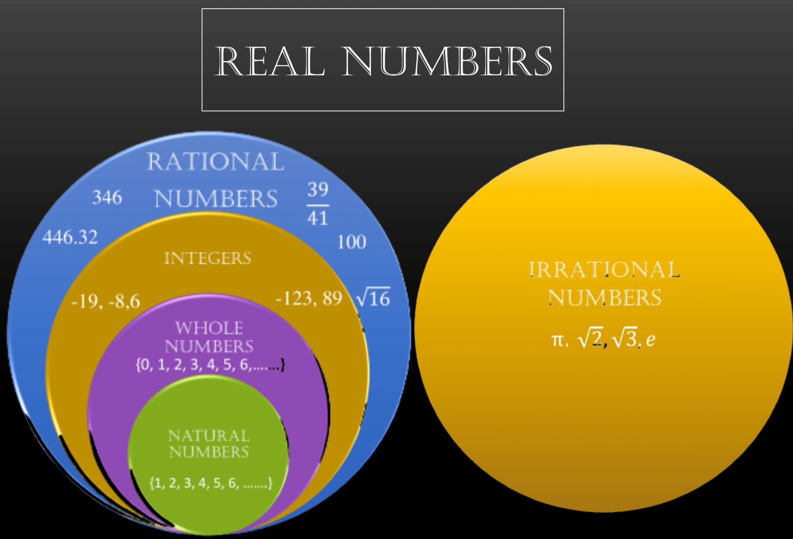
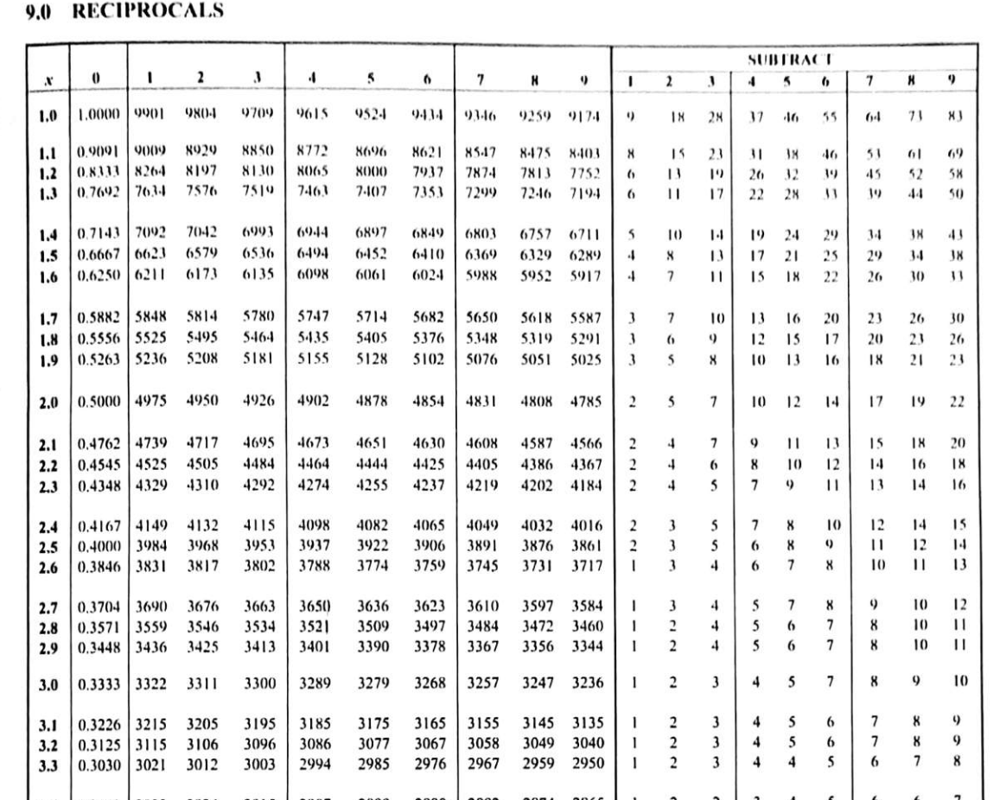
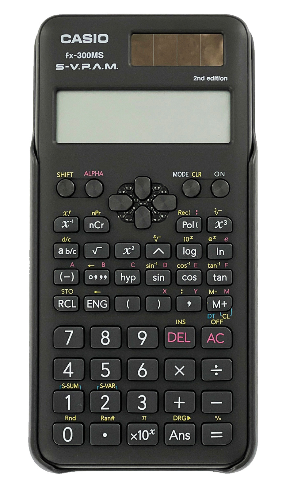

Section 1.1 Real Numbers
Real numbers represented as \(\mathbb{R}\) are a set of numbers that include all rational and irrational numbers. They can be positive, negative, or zero, and can be represented on the number line. The table below shows classification of real numbers with examples.
| Whole numbers (\(\,\mathbb{W}\)) |
\(0, 1, 2,3,4\) |
| Integers(\(\,\mathbb{Z}\)) |
\(-4,-3,-2,0,1,2\) |
| Fractions |
\(\frac{1}{2}, \frac{2}{3}, \frac{1}{3},\frac{5}{4},\frac{12}{6}\) |
| Decimals |
\(0.2,4.5,-2.6,-3.8\) |
| Irrational numbers |
\(\sqrt{2},\sqrt{7}, \pi\) |

\(\textbf{NOTE:}\) Real numbers do not include complex numbers like the square root of negative one (\(\sqrt{-1}\)).
\({\color{blue}\text{How do we use real numbers in day-to-day activities?}}\)
We use real numbers in everyday life for tasks such as managing finances while budgeting or shopping, measuring ingredients for cooking, tracking time and distance when traveling, and interpreting data on digital devices.
Subsection 1.1.1 Classifying whole numbers as odd, even, prime and composite in different situations
Whole numbers can be classified as odd, even, prime or composite based on their divisibility and factor properties.
\(\textbf{Even and Odd numbers}\)
\(\textbf{Even numbers}\) are numbers that are divisible by \(2\text{.}\)
To identify if a number is even, look at the last digit if it is \(0,2,4,6 \) or \(8 \text{.}\)
\(\textbf{Odd numbers}\) are numbers that when divided by two, you get a remainder.
To identify if a number is odd, look at the last digit if it is \(1,3,5,7\) or \(9\text{.}\)
\(\textbf{Properties}\)
-
The sum or difference of two even numbers is even.
Example: \(6 + 4 = 10\) and \(6-2 = 4\text{.}\)
-
The sum or difference of two odd numbers is even.
Example: \(7+3 = 10 \) and \(11-9 = 2\)
-
The sum of an even and an odd number is odd.
Example: \(8+ 5 = 13\)
-
When two odd integers are multiplied, the result is always an odd number.
Example: \(3 \times 3 = 9\)
-
When two odd integers are divided, the result is always an odd number.
Example: \(21 \div 3 = 7\)
-
When two even integers are multiplied, the result is an even number.
Example: \(12 \times 12 = 144\) \(\)
-
An even number multiplied by an odd number equals an even number.
Example: \(12 \times 3 = 36\)
Example 1.1.1.
Classify the following numbers as even or odd:
\(\displaystyle 1107\)
\(\displaystyle 2028\)
\(\displaystyle 3333\)
\(\displaystyle 5052\)
\(\displaystyle \sqrt{900} \times 20\)
\(\displaystyle \frac{1386}{462}\)
Solution.
\(1107\) is an odd number since its last digit is \(7\text{.}\)
\(2028\) is an even number since its last digit is \(8\text{.}\)
\(3333\) is an odd number since its last digit is \(3\text{.}\)
\(5052\) is an even number since its last digit is \(2\) .
-
For \(\sqrt{900} \times 20\text{,}\) we first solve for the expression.
\(\sqrt{900} = 30\) therefore, \(30 \times 20 = 600\) which is even.
Hence, \(\sqrt{900} \times 20\) is even since multiplication of even numbers results to an even number.
-
Dividing \(1386\) by \(462\) we get \(3\text{.}\)
Since the result is \(3\) then the number is an odd number.
Example 1.1.2.
Kirui has \(35\) cows in his farm and wants to group them equally into \(2\) pens. Will each pen have an equal number of cows? Explain using even and odd number properties.
Solution.
First we identify if \(35\) is even or odd.
Since the last digit is \(5\text{,}\) then \(35\) is an odd number.
An odd number cannot be divided evenly into \(2\) equal groups.
Therefore, one group will have \(18\) cows and the other \(17\) cows, making it impossible to have equal number of cows in each pen.
\(\textbf{ Exercise}\)
-
Classify the following numbers as even or odd.
\(\displaystyle 1008\)
\(\displaystyle \sqrt{1521}\)
\(\displaystyle 2117\)
\(\displaystyle 25^2\)
\(\displaystyle 1314\)
\(\displaystyle 1703\)
\(\displaystyle \sqrt{7376} + 1896\)
\(\displaystyle 151^2\)
List all the numbers between \(8102\) and \(8130\) and identify odd and even number from the range.
Find the sum of the first \(20\) numbers and determine if the result is odd or even.
A grade \(10\) class has \(52\) students and their class teacher wanted to group them in pairs. Will each group have an equal number of students? Explain using odd or even properties.
If a number is divisible by both \(2\) and \(3\text{,}\) what smallest composite number could it be?
\(\textbf{Prime and composite numbers}\)
\(\textbf{A prime number}\) is a number that has only two divisors, that is, \(1\) and itself. Example:\(2,3,5,7,11,...\)
To identify if a number is prime, check if the number has two factors: \(1\) and itself.
\(\textbf{Composite numbers}\) are whole numbers that are greater than \(1\) and has more than two factors.
Examples: \(4(\text{factors}:\, 1,2,4), 6(\text{factors:} \,1,2,3,6), 9(\text{factors:} \,1,3,9)\text{.}\) Hence \(4,6\) and \(9\) are composite numbers since they have more than \(2\) factors.
To identify if a number is composite, check if the number has more than two factors.
\(\textbf{NOTE:}\) \(0\) and \(1\) are neither prime nor composite.
\(\textbf{Properties}\)
The only even prime number is \(2\) .
A composite number always has at least one prime factor e.g.,\(12 = 2 \times 2 \times 3\text{.}\)
All other even numbers except 2 are composite.
Activity 1.1.1.
Working in groups, write numbers from \(1\) to \(100\text{.}\)
Sort the numbers you wrote down into odd or even.
What patterns do you notice between even and odd numbers?
Identify prime and composite numbers from the list of even and odd numbers you have.
Discuss how a number is classified.
Identify prime numbers that are even.
Brainstorm a real life example where you can find odd, even, prime and composite numbers e.g pairs of shoes are even numbers.
Describe why classifying numbers in real-life could be useful.
Share your work with your fellow learners.
\(\textbf{Extended activity}\)
Mutula is organizing a party, and he has \(35\) party hats. Can Mutula arrange the hats in rows where each row has the same number of hats? What does this tell you about the number \(35\text{?}\)
Example 1.1.3.
Which of the following numbers are prime and which are composite?
\(\displaystyle 1021\)
\(\displaystyle 1111\)
\(\displaystyle 1999\)
\(\displaystyle 2000\)
\(\displaystyle 3011\)
\(\displaystyle 3500\)
Solution.
-
\(1021\) has no divisors other than \(1\) and \(1021\) itself.
Hence \(1021\) is a prime number.
-
\(1111 = 11 \times 101\) meaning it is divisible by both \(11\) and \(101\text{.}\) it is also divisible by \(1\) and itself.
Therefore, \(1111\) is a composite number.
-
\(1999\) cannot be divided by any number other than \(1\) and \(1999\) itself.
This means that \(1999\) is a prime number.
-
\(2000 = 2^4 \times 5^3\) which implies that \(2\) and \(5\) are its divisors. Also, it is divisible by \(1\) and itself, \(20\) and \(100\text{,}\) \(2\) and \(1000\text{.}\)
Therefore, \(2000\) is a composite number
\(3011\) has no divisors other than \(1\) and \(3011\) itself, making it a prime number.
-
\(3500 = 2^2 \times 5^3 \times 7\) meaning \(3500\) has other divisors other than \(1\) and \(3500\text{.}\)
Hence \(3500\) is a composite number.
\(\textbf{ Exercise}\)
-
Classify the following numbers as prime or composite.
\(\displaystyle 1004\)
\(\displaystyle 1009 \)
\(\displaystyle 1031\)
\(\displaystyle 1050\)
\(\displaystyle 1061\)
\(\displaystyle 1033\)
\(\displaystyle 1049\)
\(\displaystyle 3092\)
\(\displaystyle 2046\)
-
Solve the following expressions and identify if it is composite or prime.
\(\displaystyle 1024 \times 5 \div 4\)
\(\displaystyle \sqrt{144} \times 3 - 9 +4\)
\(\displaystyle \sqrt{64} \times 5\)
\(\displaystyle 4^2 \times 2 + 4\)
\(\displaystyle 49^2 + 6 \div 7\)
\(\displaystyle \sqrt{25} \times 2 - 8\)
The number \(51\) is suspected to be prime. Test whether it is prime or composite.
A teacher writes a two-digit number on the board. The number is prime and ends with \(3\text{.}\) What are the possible numbers.
A marathon is divided into \(42\)-kilometer relay sections, where each runner covers an equal distance. If the distance each runner cover must be composite number of kilometers, list three possible distances each run ner could run.
A class of students forms a rectangular grid. The total number of students is \(273\text{.}\) Prove whether this is prime or composite.
Subsection 1.1.2 Classifying real numbers as rational and irrational in different situations
\(\bullet\) \(\textbf{ Rational number} (\mathbb{Q}):\) A rational number is any number that can be written as a fraction \(\frac{p}{q}\) where \(p\) and \(q\) are integers and \(q \neq 0\text{.}\)
Example: \(\frac{2}{3},-3,4 \)
\(\bullet\) \(\textbf{ Irrational number:}\) An irrational number is any number that cannot be expressed as a fraction of two intergers.
Example: \(\sqrt{7}, \sqrt{2}, \pi\)
\(\bullet\) \(\textbf{Integers}\) consists of positive whole numbers, negative whole numbers and \(0\text{.}\)
\(\bullet\) The decimal representation of a rational number either terminates (stops at some point) or repeats (continues but has a repeating pattern).
Example: \(0.375, 3.45454545...\)
\(\bullet\) The decimal representation of an irrational number neither terminates (does not stop) nor repeats (continues without following any pattern).
Example: \(3.14285714..., 4.298103993...\)
\(\bullet\) The square root of a perfect square is a rational number.
Example: \(\sqrt{16} = 4\) and \(4\) can be written as \(\frac{4}{1}\)
\(\bullet\) The square root of an imperfect square is an irrational number.
Example: \(\sqrt{2} = 1.41421356237\) which is an irrational number.
\(\textbf{ How to determine if a number is rational or irrational.}\)
Check if the number is an integer or a fraction with an integer as the numerator and the denominator. If it is, then it is a rational number.
If the number is in decimal form, check if the decimal stops at some point. If it stops then the number is a rational number.
If the number is in decimal form, check if the decimal continues. If it continues with a repeated pattern then the number is a rational number and if it continues without a pattern then it is irrational.
If the number is expressed as a square root i.e \(\sqrt{2}\text{,}\) find the square root of the number first and identify if it is a perfect or an imperfect square. If it is a perfect square (results to a whole number) then it is rational and if it is an imperfect square, then it is irrational.
Activity 1.1.2.
Working in groups, write any \(5\) numbers between \(1\) and \(10\) (e.g., \(2, 3, 5,7,..\))
Form at least \(3\) fractions using the numbers you formed above. Form both proper and improper fractions e.g.,\(\frac{2}{5},\frac{7}{3}\text{.}\)
Divide each of the fractions you formed to express it as a decimal. Example: \(2 \div 5= 0.4, 7 \div 3 =2.\dot{3}\text{.}\)
Express the numbers \(1-10\) as square roots. Example: \(\sqrt{1},\sqrt{2},...,\sqrt{10}\text{.}\)
Classify the fractions, decimals, and square root numbers you have formed as rational and irrational numbers.
What do you notice about the decimal forms of fractions?
Discuss your work with fellow learners.
\(\textbf{Extended activity}\)
Limbo, a grade \(10\) student claims that the sum of a rational and irrational number is always irrational. Is this true? Explain with an example.
Example 1.1.4.
Identify if the following numbers are rational or irrational.
\(\displaystyle \pi\)
\(\displaystyle \frac{2}{3}\)
\(\displaystyle 3.75\)
\(\displaystyle \sqrt{20}\)
\(\displaystyle \frac{\sqrt{9}}{\sqrt{16}}\)
Solution.
-
Since \(\pi\) is defined as \(3.1415926\text{.}\)
We check if the decimal continues.
Hence \(\pi\) is irrational because its decimal continues without having a repeated pattern.
-
Since \(\frac{2}{3}\) is a fraction, we check if the fraction consist of integers with the denominator not equal to zero.
Therefore \(\frac{2}{3}\) is a rational number.
-
To identify if \(3.75\) is rational or irrational, we check if the decimal terminates or continues.
Since decimals in \(3.75\) terminates, then it is a rational number.
-
For \(\sqrt{20}\text{,}\) first we find its value.
\(\sqrt{20} = 4.472135955\)
\(\sqrt{20}\) has decimal which continues without a repeated pattern.
Hence \(\sqrt{20}\) is irrational.
-
The value of \(\frac{\sqrt{9}}{\sqrt{16}} = \frac{3}{4}\)
\(\frac{3}{4}\) is a fraction with integers on the numerator and the denominator.
Therefore, \(\frac{\sqrt{9}}{\sqrt{16}}\) is rational.
Example 1.1.5.
Joy is designing a square garden. She measures the total area of the garden to be \(50\) square meters and wants to find the length of one side. What is the exact length of one side of the garden? Classify the answer as a rational or irrational number.
Solution.
Area of the garden = \(50\) m
To find the length of one side of the square, we take the square root of its area.
Side length = \(\sqrt{50}\) = \(7.07106781...\)
Since \(7.07106781...\) has decimal repeating without a pattern, \(\sqrt{50}\) is irrational.
\(\textbf{Exercise}\)
1. Classify the following numbers as rational or irrational giving reasons.
\(\displaystyle \sqrt{25}\)
\(\displaystyle \pi\)
\(\displaystyle \sqrt{2}\)
\(\displaystyle \frac{7}{3}\)
\(\displaystyle 0.25\)
\(\displaystyle 0.121221222\)
\(\displaystyle - 4.5\)
\(\displaystyle \sqrt{2} + \sqrt{8}\)
\(\displaystyle \pi - 3\)
\(\displaystyle \frac{\sqrt{4}}{\sqrt{9}} \times 4\)
\(\displaystyle 2 \times \sqrt{2}\)
2. A square garden has a perimeter of \(8\) units. Find its area and identify if it is a rational or irrational number.
3. For each of the following values of \(m\) state whether \(\frac{m}{16}\) is rational or irrational.
\(\displaystyle 1\)
\(\displaystyle -10\)
\(\displaystyle \sqrt{2}\)
\(\displaystyle \sqrt{25}\)
\(\displaystyle \pi\)
4. A car is moving at \(\sqrt{225}\) km/h. Is the speed rational or irrational? Explain your answer.
5. Iregi a grade \(10\) student measures a triangular shelf in their home and found out its sides of length was \(\sqrt{12}\) meters, \(\sqrt{27}\) meters and \(5\) meters. He wants to find the perimeter of the triangle and identify if it is rational or irrational. Help Iregi to find out if the perimeter is rational or irrational explaining your workings.
Subsection 1.1.3 Finding reciprocals of real numbers using division
The reciprocal of a real number \(x\) is \(\frac{1}{x}\text{,}\) except when \(x=0\) since division by zero is undefined.
For example:
1. The reciprocal of \(2\) is \(\frac{1}{2}\text{.}\) Using division, the reciprocal of \(2\) can be found as \(1 \div 2\)
2. To find the reciprocal of \(0.25\) using division, you divide \(1\) by \(0.25\) i.e \(1 \div 0.25\text{.}\)
3. The reciprocal of \(\frac{3}{5}\text{,}\) using division, is \(1 \div \frac{3}{5}\text{.}\)
\(\textbf{To find the reciprocal of a real number using division, follow these steps:}\)
-
Understand the Reciprocal: The reciprocal of a real number \(x\) is \(\frac{1}{x}\text{.}\) This means that when you multiply a number by its reciprocal, the result is always \(1\text{:}\)
\begin{align*}
x \times \frac{1}{x}=\amp 1
\end{align*}
-
Next, use division to find the reciprocal of a number.
Example 1: The reciprocal of \(5 = \frac{1}{5}\)
Using division to find reciprocal of \(5\) we have:\(1 \div 5\text{.}\)
|
\(0.2\) |
| \(5\) |
\(10\) |
| - |
\(10\) |
|
\(0\) |
Which is \(= 0.2\)
Example 2: The reciprocal of \(-3\) is \(1 \div -3 \text{.}\)
Using division to find reciprocal we have:
|
\(0.333\) |
| \(3\) |
\(10\) |
| - |
\(9\) |
|
\(10\) |
| - |
\(9\) |
|
\(10\) |
| - |
\(9\) |
|
\(1\) |
Hence the reciprocal of \(-3\) using division is \(= -0.333...\) also written as \(0.\dot{3}\) to mean it is recurring.
Activity 1.1.3.
In groups of \(5\text{,}\) write down numbers from \(2\) to \(15\) in ascendinding order \((2,...,15)\text{.}\)Label this as the first list.
Rearrange the numbers from \(15\) to \(2\) in descending order \((15, 14, 13, ..., 2)\text{.}\) Label this as the Second List.
-
In turns, each group member to create a fraction by:
Using the first number from the First List as the numerator.
Using the first number from the Second List as the denominator.
-
Find the reciprocals of the fractions you have formed using division.
For example: Fractions formed are \(\frac{2}{15},\frac{3}{14} , \frac{5}{12}, \frac{10}{7}, \frac{7}{10}\) then the reciprocal of \(\frac{2}{15}\) using division is \(15 \div 2\)
From the whole numbers \(2\) to \(15\) you wrote down, pick any \(3\) numbers and find its reciprocal using division.
Discuss your work with fellow learners.
Example 1.1.6.
Find the reciprocal of the following numbers using division.
\(\displaystyle 256\)
\(\displaystyle 4.2\)
Solution.
-
The reciprocal of \(256\) according to definition is \(\frac{1}{256}\) .
Dividing it we have:
|
\(0.003906\) |
| \(256\) |
\(1000\) |
|
\(-768\) |
|
\(2320\) |
| - |
\(2304\) |
|
\(1600\) |
| - |
\(1536\) |
|
\(64\) |
Hence, the reciprocal of \(256\) using division is \(1\div 256 = 0.003906\)
-
The reciprocal of \(4.2\) according to definition is \(\frac{1}{4.2}\text{.}\)
We can rerwrite \(\frac{1}{4.2}\) as \(\frac{1}{4.2}\times \frac{10}{10} \)
\begin{align*}
=\amp \frac{10}{42} \\
=\amp \frac{5}{21}
\end{align*}
Dividing \(5\) by \(21\) we have:
|
\(0.238\) |
| \(21\) |
\(50\) |
| - |
\(42\) |
|
\(80\) |
| - |
\(63\) |
|
\(170\) |
| - |
\(168\) |
|
\(2\) |
Therefore, using division, the reciprocal of \(4.2\) is \(15\div 21 = 0.238\)
Checkpoint 1.1.7.
-
Find the reciprocal of following numbers:
\(\displaystyle 5\)
\(\displaystyle -3\)
\(\displaystyle 2.5\)
\(\displaystyle -0.4\)
\(\displaystyle \frac{2}{7}\)
\(\displaystyle -\frac{5}{8}\)
If the reciprocal of \(x\) is \(\frac{1}{6}\text{,}\) find the value of \(x\text{.}\)
Movin a grade \(10\) learner covers \(\frac{1}{x}\) km from home to school. Movin realized that the distance he covers each day is the same as \(0.2\) km. Find out the value of \(x\text{.}\)
A cyclist covers a distance of \(12 \) km in \(1\) hour. Use reciprocals of numbers by division to find the time taken to cover \(1\) km at the same speed.
Subsection 1.1.4 Finding reciprocals of real numbers using mathematical tables and calculators
Mathematical tables and calculators provide alternative methods for quickly determining reciprocals, especially when dealing with large numbers or decimal values. In this section, we will explore how to use both tools effectively.
Subsubsection 1.1.4.1 Finding reciprocals of numbers using mathematical tables
Mathematical tables, specifically logarithm tables, can be used to find reciprocals.
\(\textbf{How to find reciprocals of numbers from the table.}\)
1. Express the number in standard form if it is a large number e.g \(1252=1.252 \times 10^3\text{.}\)
2. Find the reciprocal of the number from the reciprocal table.

Move down the column headed \(x\) to locate \(1.2\)
Move to the right along the row that has \(1.2\) to the column headed \(5\text{.}\)
Read the number at the intersection of the row and column which is \(0.8000\)
Move farther to the right on the same row to the SUBTRACT column headed \(2\text{.}\)
Read the number at the intersection of the row and column which is \(13\text{.}\)
-
Subtract the number \(13\) from \(0.800\text{.}\) While subtracting align \(13\) to the right as shown below.
|
\(0\) |
\(.\) |
\(8\) |
\(0\) |
\(0\) |
| - |
\(0\) |
\(.\) |
\(0\) |
\(1\) |
\(3\) |
|
\(0\) |
\(.\) |
\(7\) |
\(8\) |
\(7\) |
4. Calculate the reciprocal of \(10^3\text{.}\)
Since \(10^3\) can be written as \(1000\) then its reciprocal is \(\frac{1}{1000}\text{.}\)
5. Multiply \(0.787\) by \(\frac{1}{1000}\text{.}\)
6. Hence, the reciprocal of \(1252\) is given by \(0.787 \times \frac{1}{1000} = 0.000787\)
Activity 1.1.4.
1. Working in groups of \(5\text{,}\) consider the following numbers:
\(\displaystyle \frac{3}{4}\)
\(\displaystyle \frac{1}{3}\)
\(\displaystyle 6\)
\(\displaystyle 0.4167\)
\(\textbf{Each group should have a mathematical table}\)
2. Discuss how to use reciprocal tables to find reciprocals of each of the given numbers.
3. Determine the reciprocals of the numbers.
4. What did you realize?
5. Share your work with fellow learners.
Example 1.1.8.
Use tables to find the reciprocal of \(0.154\text{.}\)
Solution.
Given \(0.154\text{,}\) first write it in standard form: \(1.54 \times 10^{-1}\text{.}\)
Then, to locate the reciprocal of the given number:
Move down the column headed \(x\) to locate \(1.5\text{.}\)
Move to the right along the row that has \(1.5\) to the column headed \(4\text{.}\)
Read the number at the intersection of the row and column which is \(0.6494\text{.}\)
Calculate the reciprocal of \(10^{-1}\text{.}\)
Since \(10^{-1}\) can be written as \(\frac{1}{10}\) then its reciprocal is \(\frac{10}{1} = 10\text{.}\)
Multiply \(0.6494\) by \(10\text{.}\)
The reciprocal of \(0.154\) is \(6.494\)
Example 1.1.9.
Murunga’s car consumes \(\frac{1}{8}\) liters of fuel per kilometer. Use tables to identify how far Murunga can drive with 1 liter?
Solution.
If \(\frac{1}{8} \text{l} =1\)km, Then \(1 \text{l}= ?\) km
To find the distance Murunga drove using \(1\) l, we first convert \(\frac{1}{8}\) to a decimal i.e \(1\div8 = 0.125\text{.}\)
Next, we write \(0.125\) in standard form: \(1.25 \times 10^{-1}\text{.}\)
Move down the column headed \(x\) to locate \(1.2\text{.}\)
Move to the right along the row that has \(1.2\) to the column headed \(5\text{.}\)
Read the number at the intersection of the row and column which is \(0.8000\text{.}\)
Calculate the reciprocal of \(10^{-1}\text{.}\)
Since \(10^{-1}\) can be written as \(\frac{1}{10}\) then its reciprocal is \(\frac{10}{1} = 10\text{.}\)
Multiply \(0.8000\) by \(10\text{.}\)
\(0.8000 \times 10 = 8\)
Therefore, Murunga can drive \(8\) km using \(1\) l of fuel.
\(\textbf{Exercise}\)
1. Find the reciprocals of the following numbers using reciprocal tables:
\(\displaystyle 4286\)
\(\displaystyle 0.0458\)
\(\displaystyle 0.007582\)
\(\displaystyle 2.781\)
\(\displaystyle \frac{3}{8}\)
\(\displaystyle \frac{1}{0.1252} + \frac{1}{12.52}\)
\(\displaystyle \frac{4}{0.648}\)
\(\displaystyle \frac{6}{0.754} - \frac{1}{75.4}\)
2. Use mathematical tables to evaluate each of the following:
\(\displaystyle \frac{100}{29.56}\)
\(\displaystyle \frac{1}{\sqrt{0.2704}}\)
\(\displaystyle \frac{1}{1.374^2}\)
\(\displaystyle 1000 \times \frac{1}{0.7598}\)
\(\displaystyle \frac{3}{\sqrt{2025}}\)
\(\displaystyle 3.054^2 + \frac{1}{\sqrt {60.84}}\)
3. John measures that light takes \(0.000000455\) seconds to travel a certain distance. The frequency is the reciprocal of this time. Use mathematical tables to find the frequency.
4. Maria conducted a survey to determine how many students love to play games, \(0.256\) of respondents preferred playing football. To represent this as a fraction in the form \(1/n\text{,}\) what is the value of \(n\text{?}\) Use mathematical tables to determine your answer.
5. A farmer can plant \(7.85\) acres of land in one day. The time taken to plant one acre is the reciprocal of this rate. Using mathematical tables, find how many days it takes to plant one acre of land.
6. John can type 80 words per minute. He wondered how long it takes him to write one word. Find out how long it takes John to type one word . Hence determine how long it will take John to type a 400-word essay.
7. A shopkeeper has \(300\) apples and sells them in packs of 8. Determine how many packs he will have and find its reciprocal.
Subsubsection 1.1.4.2 Finding reciprocals using a calculator
To find reciprocal of a number using a calculator:

Enter the number into the calculator,
Press the reciprocal button \({\color{red} x^{-1}}\) or divide \(1\) by the number.
Read the displayed result.
Example: To find the reciprocal of \(7\text{,}\)
Press the key \(1\)
Press the key \(\div\)
Press the key \(7\)
Press the key \(=\)
Read the displayed result which is \(0.14285714286\text{.}\) Hence the reciprocal of \(7\) is \(0.1429\)
Activity 1.1.5.
1. Working in groups, use a calculator to work out the reciprocal of \(151.6\)
Press the keys \(1\) \(\div\) \(1\) \(5\) \(1\) \(.\) \(6\) in that order.
Press the key \(=\)
2. Read the displayed result. What is the reciprocal of \(151.6\) from the calculator?
3. Work out the reciprocal of each of the following numbers usin g the calculator:
\(\displaystyle 0.0038 \)
\(\displaystyle 0.5498\)
\(\displaystyle \frac{1}{8}\)
\(\displaystyle 564\)
4. Discuss with other learners how you determine the reciprocal of a number using a calculator.
Example 1.1.10.
Find the reciprocal of the following using a calculator.
\(\displaystyle 5.6\)
\(\displaystyle 0.003\)
\(\displaystyle 12.8\)
Solution.
Press the on button start your calculator .On your calculator:
Press the keys \(1\) then \(\div\) then \(5\) then \(.\) then \(6\text{.}\)
Press the key \(=\)
Read the reciprocal of \(5.6\) on the screen of the calculator.
Hence the reciprocal of \(5.6\) is from the calculator is:
To calculate the reciprocal of \(0.003\) :
Press the keys \(1\) then \(\div\) then \(0\) then \(.\) then \(0\) then \(0\) finally \(3\text{.}\)
Press the key \(=\)
Read the reciprocal of \(0.003\) on the screen of the calculator.
Hence the reciprocal of \(0.003\) is from the calculator is:
To calculate the reciprocal of \(12.8\text{:}\)
Press the keys \(1\) then \(\div\) then \(1\) then \(2\) then \(.\) then finally \(8\text{.}\)
Press the key \(=\)
Read the reciprocal of \(12.8\) on the screen of the calculator.
Hence the reciprocal of \(12.8\) is from the calculator is:
\(\textbf{Exercise}\)
1. Find the reciprocal of the following numbers using a calculator:
\(\displaystyle 8\)
\(\displaystyle 125\)
\(\displaystyle 598\)
\(\displaystyle 8638\)
\(\displaystyle 8.861\)
\(\displaystyle 0.00067\)
\(\displaystyle 0.01467\)
\(\displaystyle 0.4875\)
2. A school cafeteria has \(8\) large trays of food to serve equally among the students. To find out how much food each student will get per tray, the cafeteria manager needs to calculate the reciprocal of \(8\text{.}\) Using a calculator, how can the manager find the reciprocal of \(8\text{,}\) and what is the answer?
3. A group of friends has \(5\) bottles of juice to share equally. Use a calculator to determine how much juice each person gets per bottle.
4. If a machine completes a task in \(6\) hours, its work rate per hour is the reciprocal of the time. Use a calculator to determine the reciprocal and explain what it represents.
5. A car travels \(12\) kilometers on \(1\) liter of fuel. Use a calculator to find out liters of fuel needed per kilometer.
6. Write down \(3\) numbers and work out their reciprocals using a calculator.
Subsection 1.1.5 Using reciprocals of real numbers in mathematical computations
This is application of the concept of reciprocals to perform different types of mathematical operations such as division, solving equations, proportions, rates, and real-life problem-solving.
\(\textbf{How reciprocals are used in mathematical computations:}\)
-
Converting Division into Multiplication
Instead of dividing a number, we multiply by the reciprocal: \(a \div b = a \times \frac{1}{b}\text{.}\)
Example with whole numbers:
\(8 \div 2 = 8 \times \frac{1}{2} = 4\)
Example with fractions:
\begin{align*}
\frac{5}{6} \div \frac{2}{3}=\amp \frac{5}{6} \times \frac{3}{2}\\
=\amp \frac{15}{12}\\
=\amp \frac{5}{4}
\end{align*}
-
Solving Equations
When solving equations where a variable is multiplied by a number, we use the reciprocal to isolate the variable.
Example: Solve for \(x\) in the equation \(3x = 12\)
To solve for \(x\text{,}\) multiply both sides by the reciprocal of \(3\text{.}\)
Therefore, \(x = 12 \times \frac{1}{3} = 4\)
-
Working with proportions and ratios while cooking.
Example: If a recipe uses \(\frac{2}{3}\) of a cup of sugar per serving, how many servings can you make with \(4\) cups?
To find the number of servings, compute: \(4 \div \frac{2}{3}\)
\begin{align*}
=\amp 4 \times \frac{3}{2}\\
=\amp \frac{12}{2} \\
= \amp \, 6 \text{ servings}
\end{align*}
-
Real-World applications like determining speed and time.
Example: If a car moves at \(60\) km/h, to determine how long it takes to travel \(1\) km, we use reciprocal.
Therefore to travel \(1\) km we take the reciprocal of speed which is \(\frac{1}{60}\) hours per km.
Activity 1.1.6.
In groups, find an exercise book and a pen or a marker.
1. Write different numbers (that is positive, negative, decimal numbers and fractions) on the exercise book.
Example: \(2, -4,0.25,\frac{5}{8}\)
2. Find the reciprocals of the numbers you have formed.
Example: Number formed is \(\frac{5}{8}\) its reciprocal is given by \(1 \div \frac{5}{8} = 1 \times \frac{8}{5} = \frac{8}{5}\)
3. Multiply the original number you formed by its corresponding reciprocal and observe the result.
Example: \(\frac{5}{8} \times \frac{8}{5}\)
4. Discuss cases where reciprocals do not exist.
5. Identify a real world problem where reciprocals are useful.
6. Share your work with fellow learners.
Example 1.1.11.
Kerich is a farmer and has \(\frac{2}{3}\) of an acre of land and wants to divide it into plots of \(\frac{1}{6}\) acre each. How many plots can Kerich make?
Solution.
To find the number of plots that Kerich can make, we solve it as a division problem.
Divide \(\frac{2}{3}\) by \(\frac{1}{6}\) and solve it by multiplying \(\frac{2}{3}\) by the reciprocal of \(\frac{1}{6}\) as below:
\begin{align*}
\frac{2}{3} \div \frac{1}{6}=\amp \frac{2}{3} \times \frac{6}{1}\\
\frac{12}{3}= \amp 4
\end{align*}
Hence Kerich can make \(4\) plots.
Example 1.1.12.
Njoki, a business woman invest ksh \(5\,000\) in a business that promises to double his investment every \(1.5\) years. What fraction of her initial investment will she have after \(4.5\) years?
Solution.
If \(1.5\) years \(= 2\) times the initial investment, how about \(4.5\) years?
Computing the number of times her investment will yield after \(4.5\) years we have: \(4.5 \div 1.5\)
\begin{align*}
= \amp 4.5 \times \frac{1}{1.5}\\
= \amp 3
\end{align*}
This means her investment will double \(3\) times.
Therefore, after \(4.5\) years her investment will be \(5000 \times 2\times2\times2\)
\begin{align*}
= \amp 5000 \times 8\\
= \amp 40\,000
\end{align*}
\(\textbf{Illustration} \)
Representing the number of years with their corresponding double investment in ksh makes it easier to understand the above computations.
Remember at the start of a period we will represent it with a \(0\text{.}\)
| Years: |
\(0\) |
\(\rightarrow\) |
\(1.5\) |
\(\rightarrow\) |
\(3.\) |
\(\rightarrow\) |
\(4.5\) |
| Shillings: |
\(5\,000\) |
\(\rightarrow\) |
\(10\,000\) |
\(\rightarrow\) |
\(20\,000\) |
\(\rightarrow\) |
\(40\,000\) |
Hence Njoki will have ksh \(40\,000\) after \(4.5\) years.
\(\textbf{Exercise}\)
-
Solve the following using reciprocals:
\(\displaystyle 6 \div \frac{2}{3}\)
\(\displaystyle 4x = 12\)
\(\displaystyle \frac{3}{5} \times x = 9\)
\(\displaystyle 0.2 \div 4.5\)
Solve: (\(\frac{4}{7} \div \frac{2}{5}\))\(\times\) (\(\frac{3}{8} \div \frac{9}{16}\))
If \(x \times \frac{3}{8} = \frac{5}{12}\text{,}\) find the value of \(x\) using reciprocals.
The population of a town increases by \(\frac{2}{5}\) every year. How many years will it take for the population to triple?
Kingvalley bank offers \(\frac{1}{6}\) interest rate per year. A customer earns ksh \(12,000\) interest in one year. What was the original deposit?
A hiker is walking \(24\) km and takes breaks every \(\frac{2}{3}\) km. How many breaks will he take by the end of the journey? If he changes his break interval to \(1\frac{1}{3}\) km, how does the number of breaks change?
A road is \(12.6\) km long and is divided into equal segments of \(0.35\) km for maintenance. How many segments are there?
Subsection 1.1.6 Real-world applications of reciprocals of real numbers
Reciprocals are important in various fields, including finance, science, engineering, medicine, and transportation . In disciplines such as physics, chemistry, and manufacturing, dividing rational numbers using reciprocals helps solve real-world problems, from calculating speed and time to determining chemical concentrations and optimizing production efficiency.
In this section, we will explore real-world applications of reciprocals and how they make mathematical computations easier and more practical.
\(\textbf{Example}\)
1. A printing machine can print \(\frac{5}{6}\) of a book page per second. How long will it take to print \(20\) pages?
If \(1\) second = \(\frac{5}{6}\) of a page, then for \(20\) pages, we calculate as follows:
Time = \(20 \div \frac{5}{6}\text{.}\)
Time = \(20 \times \frac{6}{5}\)
Multiplying and simplifying we have: Time = \(\frac{120}{5} = 24\) seconds.
Thus, the printing machines will take \(24\) seconds to print \(20\) pages.
2. If a car travels at \(80\) km/h, to find out the time taken per km we can use reciprocal.
Time per km = \(\frac{1}{80}\) hours per km.
3. If a factory produces \(300\) items in \(5\) hours, then the production rate per hour is:
\(\frac{300}{5} = 60\) items per hour.
To determine how much time is needed per item, we use reciprocal:
Hence, the factory produces \(1\) item every \(\frac{1}{60}\) hours.
Activity 1.1.7.
Nkirote is a baker and is preparing large orders of bread for a grade \(10\) student’s event. Each batch of bread requires \(\frac{2}{3}\) kg of flour, and she has a total of \(12\) kg of flour. She needs to determine how many full batches she can make. As she prepares, she realizes that each batch also requires \(\frac{3}{4}\) liters of milk. If she has \(9\) liters of milk available, she must check whether she has enough for all the batches. To ensure efficiency, she calculates how many full loaves of bread she can produce if each batch yields \(\frac{2}{5}\) of a loaf per kilogram of flour used.
1. Working in groups, use reciprocals to determine how many full batches of bread the baker can make with \(12\) kg of flour.
2. Calculate whether \(9\) liters of milk is enough for all the batches.
3. If each batch produces \(\frac{2}{5}\) of a loaf per kilogram of flour, how many full loaves can she make?
4. How was reciprocal helpful in dividing quntities while baking?
5. Discuss areas where reciprocals are applied in the real word.
6. Discuss your work with fellow learners.
Example 1.1.13.
Okoth runs \(3 \frac{1}{4}\) miles in \(\frac{1}{2}\) an hour. What is her speed in miles per hour?
Solution.
To find speed we divide distance by time such that: speed = \(\frac{\text{ distance}}{\text{ time}}\text{.}\)
First, we need to convert the fraction \(3\frac{1}{4}\) into an improper fraction which is \(\frac{13}{4}\)
Hence, speed = \(3\frac{1}{4} \div \frac{1}{2} = \frac{13}{4} \div \frac{1}{2}\)
Multiply \(\frac{13}{4}\) by the reciprocal of \(\frac{1}{2}\text{.}\)
\(\frac{13}{4} \times \frac{2}{1} = \frac{26}{4}\)
Simplifying \(\frac{26}{4}\) we get \(\frac{13}{2}\) which is \(= 6 \frac{1}{2}\text{.}\)
\(\textbf{Exercise}\)
1. A paint manufacturer claims that \(1\) liter of paint covers \(48\) square feet. A customer buys a \(0.5\)-liter sample and uses it to paint a \(2\)-foot by \(4\)-foot section of a wall. To determine whether the sample meets the manufacturer’s claim, first calculate the area it covers. Then, using reciprocals, find how many times \(0.5\) liters fits into \(1\) liter. Compare the result with the stated \(48\) square feet per liter to determine if the sample performs as expected.
2. A gardener can plant \(\frac{7}{9}\) of a flowerbed per hour. How long will it take to complete \(18\) flowerbeds?
3. A printer in a publishing company prints \(\frac{2}{5}\)of a book page per second. How long will it take to print \(90\) pages at this rate?
4. A car consumes \(\frac{2}{7}\)of a gallon of fuel per mile. If the fuel tank holds \(21\) gallons, how many miles can the car travel before running out of fuel?
5. A construction crew is tasked with laying concrete on a road section. A \(7\) -ton cement truck can produce enough concrete to cover \(280\) square meters. However, due to supply limitations, only \(4.5\) tons of cement is available. Using reciprocals, determine how many square meters can be covered with \(4.5\) tons of cement.
6. A laboratory is preparing a specialized chemical solution. The standard formula states that \(5 \) liters of a concentrated acid can be diluted to produce \(150\) liters of usable solution. If the lab technician only has \(3.75\) liters of the concentrate, use reciprocals to calculate how many liters of usable solution can be prepared.
7. A group of workers can complete \(\frac{3}{4}\) of a construction task in \(6\) hours. How much time will it take to finish the entire task at the same rate?